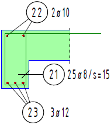

Für Bewehrungen mit Formstahlelementen sind in der Regel folgende Arbeitsschritte notwendig:
1.Erzeugen der Auszugsform
Zum Erzeugen der Auszugsform stehen folgende Funktionen zur Verfügung:
ForSch |
ForAbl |
ForTyp |
ForGeo |
|---|---|---|---|
(Formtyp an Schalung ableiten) Geeignet für alle ebenen Formen |
(Biegeform an Schalkante ableiten) Für Formen mit geraden Teillängen |
(Form aus Typentabelle wählen und ableiten) Nur für Formen, die in der Formtyptabelle vorgesehen sind |
(Form aus Geometrie-Polygon erzeugen) Beliebige Form aus geraden und kreisförmigen Teillängen |
Verlegung als Staffel [VeStaf]Stäbe werden nebeneinander dargestellt. Die Biegeformen werden als Linien gezeichnet. Verlegung als Form [VeForm]Bügel im Schnitt, Längsstab in Ansicht. Die Stäbe werden in der Tiefe gestaffelt, wobei nur der oberste zu sehen ist. Die Biegeform wird als Linienzug gezeichnet. Voutenförmige Verlegung [VeVout]Staffelverlegung mit einer veränderlichen Teillänge. Benötigt wird ein Biegeform-Auszug, der in keiner anderen Verlegung verwendet wird. (Der Auszugstext liegt in der Form … ? ø ? (…) vor). In SchnittdarstellungStäbe werden im Querschnitt gezeichnet. ·Verschiedene Positionen im Schnitt [VePoSn] ·Gleiche Durchmesser im Schnitt [VeDuSn] ·Verschiedene Durchmesser im Schnitt [VenøSn] Verlegung in Schnittdarstellungen
VerlegefaktorBei der Eingabe einer Verlegung wird abschließend der Verlegefaktor abgefragt. Bei Darstellungen, die schon an anderer Stelle gezählt wurden, muss der Faktor 0 (Null) eingegeben werden, da die Verlegung sonst mehrfach gezählt wird und im Ergebnis falsche Stückzahlen berechnet werden. VerknüpfungenVerknüpfungen werden dort eingesetzt, wo es sich eindeutig um dieselbe Verlegung handelt. Das ist z. B. bei der unteren Biegezugbewehrung eines Balkens der Fall, die in der Seitenansicht als Form und im Querschnitt als Durchmesser im Schnitt dargestellt wird. Wenn Sie Änderungen an der einen Verknüpfung vornehmen, werden diese automatisch auf die andere übertragen. Siehe auch: Verknüpfungsmodus |
3.Positionieren der Verlegung
 |
Mit dem Positionierungsprogramm [BiPos] können Sie für eine Verlegung unterschiedliche Positionierungen erzeugen. Folgende Methoden stehen zur Verfügung: ·Positionierung als Harfe [Harfe] ·Fächerförmige Beschriftung [Fächer] ·Freie Positionierung [RuFrei] Um die Zeichnung auf fehlende Positionierungen zu überprüfen, nutzen Sie die Funktion [Info]. |
4.Zusätzliche Aufgaben
·Zusatztext für Biegeliste einfügen ·Summandentext für Auszüge anlegen |
Siehe auch: